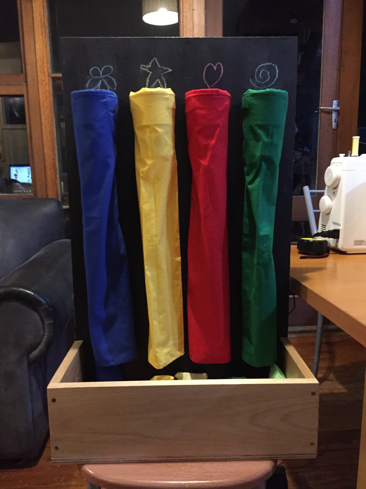

My life has been surrounded by technology and creativity in many different ways. All these experiences led me to the direction of technology teaching.
I believe that the environment in which a person grows up significantly impacts them in terms of their values and interests. Growing up in a household that values technology and creativity certainly influenced my interest in these areas. My dad is an electrical engineer and good at building and creating, going as far as to build an extension for our house. My mum often comes up with creative ideas but is also skilled in textiles, and my brother is interested in the coding side of technology and the creation of games.
With a family that values creative subjects, I was not discouraged (unlike many people I know) from taking technology/ creative subjects at school. Due to this, I took many different subjects that all built to form interests strong enough to pull me towards teaching TASKLA. I took mandatory technology subjects as well as 9-10 design and technology, year 9 information and Software technology, 9-11 visual arts and 11-12 industrial technology multimedia.
My school was very limited in the available subject choices, with key subjects not being offered at all, such as elective textiles, which I would have considered taking. Design and technology was, however, offered and was a way that I could try lots of different technologies and find solutions in almost any material I wanted. I greatly enjoyed this subject and found that I was fairly good at it, completing various projects through a range of techniques and materials, including wood, textiles, and computer-aided design.
Above, Some projects I compleated within highschool
Doing visual arts certainly built upon my creative skills
and developed the way that I consider the world. I was also
acquiring practical skills in communication, design, perspective, and more.
I have found that art is heavily related to technology in both concepts and
practical skills. For example, in year 11 I did a series of etchings, I later found,
at university, this method of printing is very similar to many surface printing methods
found in textiles.
Above, My year 11 Art project using similar techniques to textiles: print making and drawing fabrics
I got to a point where I had to choose art or technology for my HSC. Ultimately,
I chose to do a major work incorporating both, just in an industrial setting.
This was my multimedia major work. I enjoyed trying techniques I had never done before.
Above, a section from my ITM HSC Major Work: Video Component
Even outside of school, I have always enjoyed doing creative and practical tasks;
for example, one of my interests is dance. Dance helps develop creativity, teamwork,
and special awareness; all things I believe to be important for a stage 4 technology
teacher. It also helped me develop an interest in textiles due to all the different
costumes.
Since starting my university degree, I have deepened my interest in technology,
with the degree giving me the opportunity to build and develop skills and
techniques in familiar and unfamiliar areas.
A main push for me to go into technology teaching was one of my high school technology teachers.
She was always happy and enthusiastic whilst also being logical.
It made me think that teaching, a career I had never considered, could be an enjoyable career.
There are many different teaching areas available, however, to be an effective teacher,
I believe to have a genuine interest or understanding of what the students are doing or learning. For me personally technology matches this the best for me. I have a
strong interest in most, if not all the different areas taught within technology.
I also know that I will enjoy the variety that comes in teaching an area so broad.
School was not easy for me. In late primary school I was diagnosed with specific
learning difficulties. Due to this I have a special interest in trying to facilitate
students and help them to work at their highest possible potential. I believe all students
are different with their own challenges, needs and interests.
I went to a high school that was very academic. Technology subjects were not
valued as highly as other subjects. I wish to change this attitude and
advocate for these subjects to be considered equal to others.
Technology contains subjects that are very different from the rest of their schooling.
Being a teacher of technology puts me in a unique position to teach students in these
unique areas. This difference in learning was something I appreciated throughout my schooling,
and I wish to share that experience on.
Why I Chose to Be a TAS Teacher and Future Goals
Contact Me